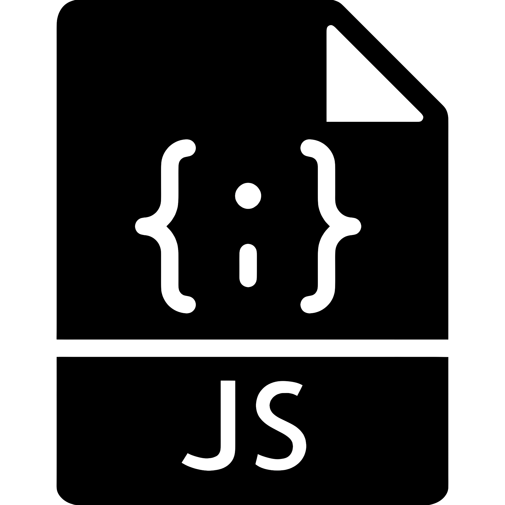
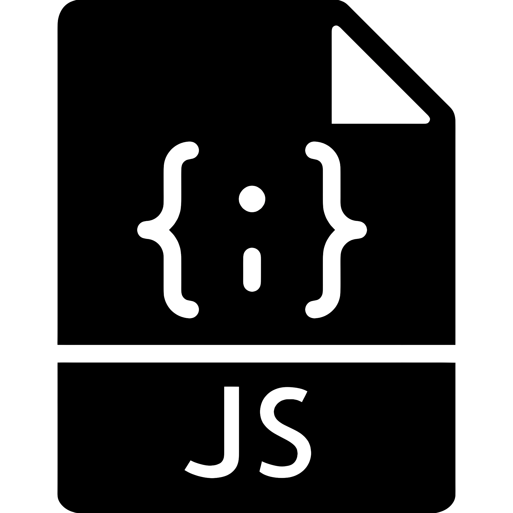
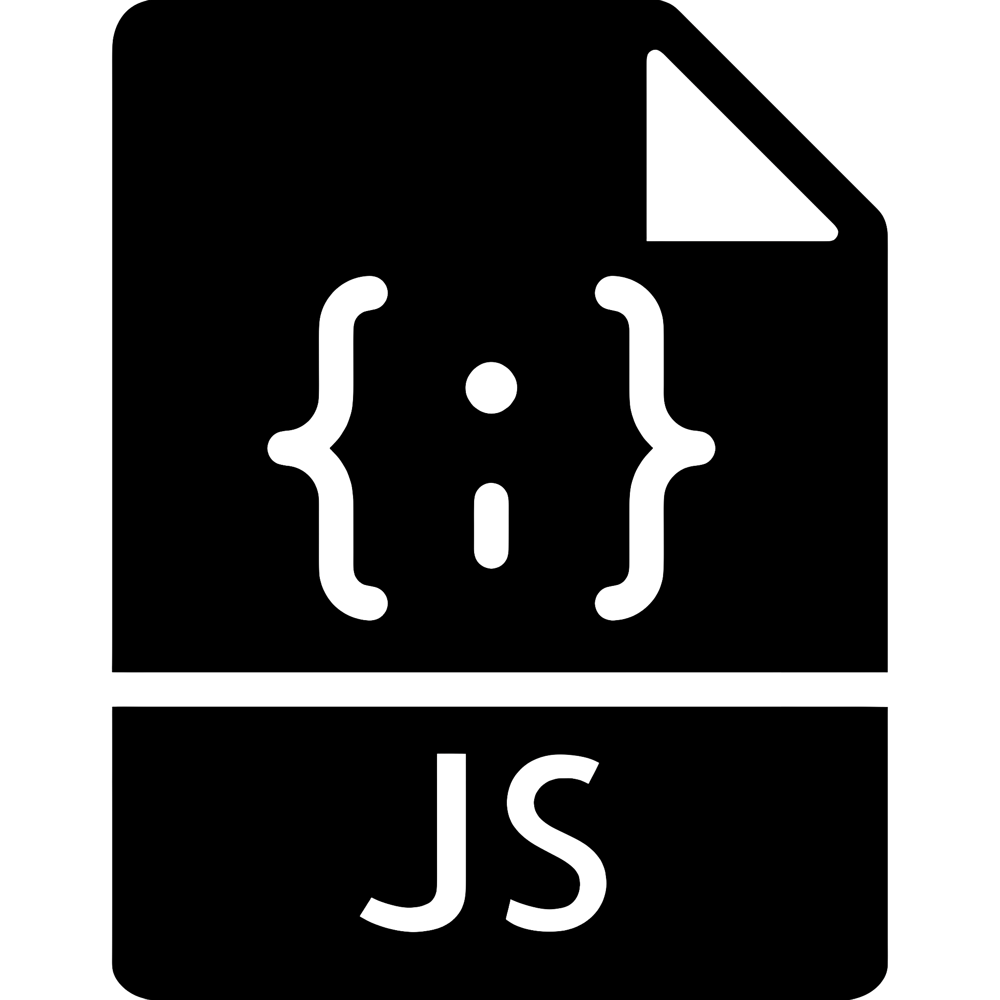

HARD SKILLS
FRONT-END
 

Mon parcours n’a rien de linéaire — et c’est ce qui fait ma force. J’ai débuté mes études en commerce international, avec une spécialisation en management d’entreprise. Mais c’est en découvrant l’univers du web et du code que j’ai trouvé un nouveau terrain d’expression. Ce déclic m’a poussée à prendre un virage audacieux : celui d’une reconversion vers les métiers du design et du développement web. C’est dans cette voie que je me projette avec passion pour les années à venir. Je n’ai pas peur de ce changement — au contraire, je le vis comme une nouvelle aventure que je choisis pleinement.
Toujours prête à tester de nouvelles idées et élargir mon champ de compétences.
M’ajuster rapidement aux nouveaux défis.
Imaginer des expériences visuelles et interactives impactantes.
J’apprécie les échanges constructifs et la richesse des points de vue.

Danse : hip-hop
Voyage
Musique : flûte
Livre
Anime
Découverte culinaire